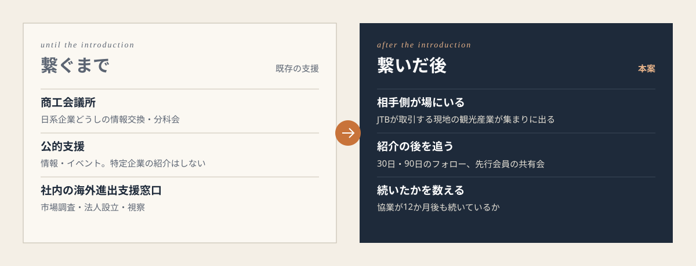
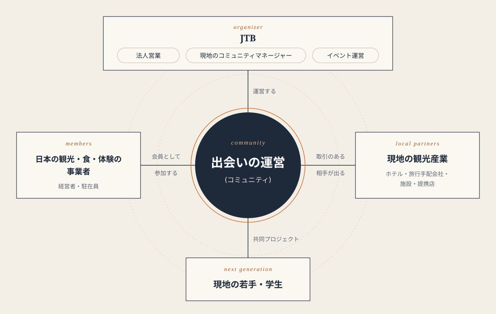
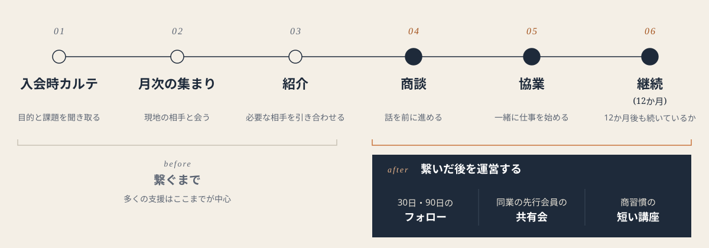
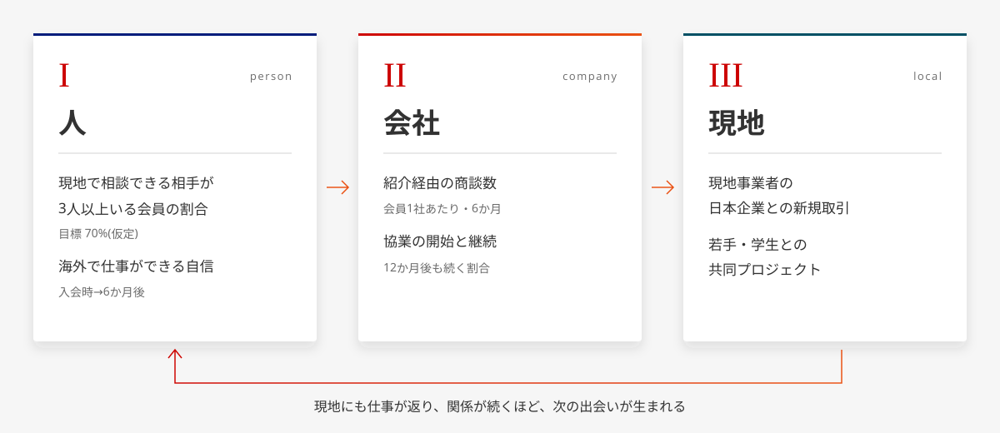
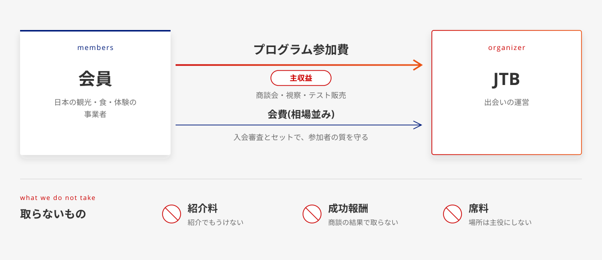
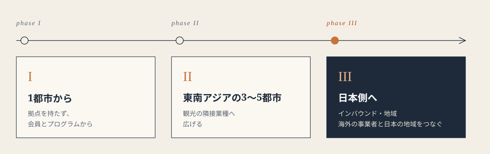

Origin & Definition問いと「交流」の定義
近くにいても、
交流は生まれない。
インターン先で、すぐ隣に人がいるのに交流が生まれない、さみしさを経験しました。海外に一歩を踏み出した人は、もっとそうなのではないか。そこから、この事業を考えはじめました。
私たちの「交流」の定義 仮説
同じコミュニティで時間を重ね、
紹介される関係が生まれ、
その関係が続くこと。
- 出会う
- 時間を重ねる
- 紹介される
- 続く
名刺交換のような単発の出会いとの違いは、“紹介の連鎖”と“継続”です。JTBは2025年1月の年頭所感で、交流創造事業を「人と人、人と地域、人と組織の出会いと共感をサステナブルにつくり続ける」と再定義しました（業界誌の報道より）。私たちの定義は、これと同じ方向を向いています。
People人々
現地での
「入り口が分からない」。
対象は、1〜数名で海外に立つ、日本の観光・食・体験の事業者の経営者や駐在員です。視察で一歩を踏み出した段階から、現地の入り口がないという問題は同じだと考えています。
取材の要旨：海外進出の支援の現場では、「結局、誰を頼ればいいのか分からない」「どの支援を選べばいいのか分からない」という状態の企業が多い、と聞きました。海外進出支援の専門家への取材より。発言そのままではありません。
31.9%
海外展開に関心のある企業のうち、「信頼できる現地パートナーの開拓ができない」と答えた割合
中小機構「中小企業の海外展開に関する調査」2024。実施・予定・関心ありの企業 n=310、複数回答。中小全体の値ではありません。
85.2%
海外展開を担う人材の「人数が不足・確保できていない」と答えた企業の割合
JETRO「日本企業の海外事業展開に関するアンケート調査」2025年度。回答企業全体 n=3,063。中小に限った値ではありません。
Voices事業者の声
- 01
現在取材中
掲載は本人の許可を得てから - 02
現在取材中
掲載は本人の許可を得てから - 03
現在取材中
掲載は本人の許可を得てから
海外に出た観光・食・体験の事業者への取材は実施中です。声を作ることはしません。業種別の数字は見つかっていません。
The Gap既存の支援
既存の支援は、
繋ぐまでが中心。
商工会議所、公的な海外展開支援、JTB社内の海外進出支援の窓口。どれも大切な入り口ですが、集まるのは主に日本側の企業で、支援は“繋ぐ”ところまでが中心です。
取材の要旨：接点を持つことは資金やAIでも解決できるが、その後（契約や継続的な関係づくり）のほうが課題が多い、と聞きました。海外進出支援の専門家への取材より。発言そのままではありません。

| 支援の形 | 集まる人 | 繋ぐまで | 繋いだ後 |
|---|---|---|---|
| 在外の日本商工会議所 | 日本側の企業 | 情報交換・分科会 | （確認できず） |
| 公的な海外展開支援 | 日本側の企業 | 情報・イベント・マッチング会 | 特定企業の紹介はできない立場 |
| JTB社内の海外進出支援の窓口 | 日本側の企業 | 市場調査・視察・マッチング等 | 継続的な関係づくりは要検証 |
| 本案 | 日本側＋相手側 | 入会審査・月次の集まり・紹介 | 30／90日のフォロー・継続まで運営 |
推測 既存の支援の位置づけは、公開情報と取材からの私たちの整理です。
商工会議所や公的支援は競合ではなく、紹介元・連携先です。社内の窓口とは重複を避け、“繋いだ後”を受ける設計にしています。
Solution解決
場所を貸すのではなく、
相手側を出して、
出会いの運営を届ける。
この事業でいう「相手側」
JTBが取引する現地のホテル・旅行手配会社・施設・提携店（旅行会社としての取引からの推測を含みます）

- 01
会員制で、質を守る
入会審査（目的・事業内容）と会費で、目的の合う人に絞ります。誰でも入れる会には目的外の参加者が集まりやすい、という支援の現場の知見に沿った設計です。
- 02
相手側を、月次の場に出す
現地の観光産業、金融機関・自治体、学生・若手が参加する集まりを毎月ひらきます。相手側の参加には、JTBの現地法人との合意が前提です。提案
- 03
拠点は持たない
主役は場所ではなく出会いの運営です。席料は受け取りません。会員とプログラムから小さく始めます。
The Journey体験の流れ
入会から、関係が続くまで。
6つの段を、それぞれ数えて運営します。紹介にも商談にも、手数料はいただきません。

- 1入会時カルテ目的・事業・現地での課題を聞き取る
- 2月次の集まり相手側と同じ場で出会う
- 3紹介カルテをもとに引き合わせる
- 4商談話が具体になる
- 5協業取引・共同の取り組みが始まる
- 6継続12か月後も関係が続いているか
“繋いだ後”を運営する、3つの手
30日・90日のフォロー
紹介の後、コミュニティマネージャーが商談の詰まりを聞き、契約や商習慣の論点を専門家につなぎます。
同業の先行会員の共有会
同じ業種で先に現地に出た会員が、うまくいったこと・止まったことを共有します。
商習慣の短い講座
関係が続かない原因になりやすい、現地の商習慣や契約の基本を短く学びます。
Well-being豊かさ
豊かさは、
人→会社→現地の順に測る。
出会いのその後で測ります。目標値はすべて仮の置き方です。

人の層の目標：入会6か月で「現地で相談できる相手が3人以上いる」会員 70% 仮定
-
Human ／ 人
現地で、頼れる相手ができる
70% 仮定
入会6か月で「現地で相談できる相手が3人以上いる」会員の割合。あわせて「海外で仕事ができる自信」を入会時と6か月後で比べます。
-
Company ／ 会社
紹介から商談、協業、そして継続へ
紹介経由の商談の数と、協業が始まった後に12か月続いているかを見ます。仮定
-
Local ／ 現地
日本との新しい仕事と学び
現地の事業者に生まれた日本企業との新しい取引と、現地の若手・学生との共同プロジェクトを数えます。仮定
Business Modelお金の流れ
払うのは会社。
主な収益はプログラムの参加費。
会費は相場並みにして、入り口の質と継続を守ります。商談会・視察・テスト販売などのプログラムは都度の参加費で、イベント運営（MICE）の力がそのまま活きる部分です。

約200社
1都市で損益が釣り合う会員数 仮定
会費とプログラム参加を合わせた1社あたりの月額と、運営の固定費からの試算。
約31万円
会員1社の年間の支払額 仮定要検証
会費とプログラム参加費の合計。払っていただけるかは取材で確かめています。
- 会員（日本の事業者）→ JTBプログラム参加費（主な収益）・会費（相場並み）
- JTB → 相手側・専門家紹介に手数料はかかりません
- 紹介料・成功報酬は取りません（法律上の論点は要専門家確認）
- 席料は受け取りません
Why JTBなぜJTBか
相手側との接点と、
動ける人。
JTBは旅行会社として、現地のホテルや施設と日々取引していると考えられます（旅行業の性質からの推測）。そのうえで、この事業では次の3つの場面で人が動きます。
- i
日本側の法人営業が、入口で声をかける
海外に踏み出そうとする事業者に、最初の一歩として会を紹介します。
- ii
現地のコミュニティマネージャーが、月次の集まりを回す
カルテをもとに引き合わせ、紹介の後もフォローします。
- iii
イベント運営（MICE）の手で、商談会を組む
現地での商談会・視察・テスト販売を、本業の段取り力で形にします。
この運営で、3者が育つ
- 会員
- 現地の若手
- 運営する社員
※ JTBの海外の拠点は153拠点（37カ国・地域、2026年3月31日時点、提携販売店を含む。同資料内に36の表記もあり）。旅行の営業拠点であり、不動産ではありません。人の配置や現地法人の協力はすべて私たちの提案で、JTBとの合意はありません。
Roadmap & Risks進め方とリスク
1都市から、小さく始める。

Phase 1
1都市・会員とプログラムから
拠点は持ちません。単月の黒字が続くことなど、次に進む条件を先に数値で決めます。仮定
Phase 2
ASEANの3〜5都市へ
業種は観光の隣接（宿泊・飲食・小売・体験・地域の文化事業）に留め、相手側が効く範囲で広げます。
Phase 3
日本側へ
海外の観光事業者が日本の地域と組む、インバウンド・地域の側にも広げます。
リスクと対策
払っていただけるか
最大のリスクです。事業者への取材で、会費とプログラム参加費を確かめています。要検証
マッチングイベントで終わらないか
月次の集まりだけでは既存と同じです。だから「12か月後も続いているか」を指標の中心に置きます。
法務・安全
入会審査、会員情報の同意、紹介と法律、学生の受け入れなどは、すべて専門家に確認します。要専門家確認
How we got here検討の変遷
調べて、聞いて、
形を変えてきた。
- マッチング案
- 交流ミッション案
- 拠点（不動産）案
- 会員制の交流運営案
- 相手側を出す、“繋いだ後”のコミュニティ
調べて分かったこと
- 1JTBの海外の拠点は旅行の営業拠点で、不動産ではなかった。だから場所を主役にしなかった。
- 2拠点を持たずに代理店やパートナーを使う企業が多い。だから入居を前提にしなかった。
- 3支援の現場の実感は「課題は繋いだ後」。だから継続までを運営の中心にした。
Our Answer私たちの答え
問い ─ 交流の力で、人々がもっと豊かになる事業とは。
出会った後も関係が続き、
海外で一人ではなくなること。
交流の力で、海外に一歩を踏み出した人に“頼れる相手”ができ、会社には続く取引が、現地には日本との新しい仕事が生まれる。それが私たちの答えです。
現在、海外に出た観光・食・体験の事業者に取材しています。分かったことは、本人の許可を得てから、このページに反映します。
Sources & Notes出典と注記
- 31.9%（n=310）中小機構「中小企業の海外展開に関する調査（2024年）」図表5。実施・予定・関心ありの企業、複数回答。smrj.go.jp（PDF）
- 85.2%（n=3,063）JETRO「2025年度 日本企業の海外事業展開に関するアンケート調査」。海外展開人材の人数が不足・確保できていない。jetro.go.jp（PDF）
- JTBの交流の再定義（2025年1月）年頭所感を報じた業界誌の記事（二次情報）。travelvoice.jp
- JTBの海外153拠点JTB essence book p.28。2026年3月31日時点、提携販売店を含む本社・支店・営業所。jtbcorp.jp（PDF）
- 会費の相場東京商工会議所 法人年1.5万円〜／大阪商工会議所 法人1口年1.8万円／JETROメンバーズ 年7.7万円。本案の会費（年5〜10万円）は仮定です。東商大商JETRO
- JTB社内の海外進出支援の窓口LAPITA（市場調査・法人設立・視察・ビジネスマッチング等）。lapita.jp
- ネットワークの外にいる不利Johanson, J. & Vahlne, J.-E. (2009) Journal of International Business Studies 40, 1411–1431（要旨を確認。実証は未確認）。
仮定 試算や目標のための仮の数字です。要検証 取材などで確かめている途中です。提案 JTBとの合意がない、私たちの設計です。
取材の要旨は「取材の要旨:」と示し、発言そのままではない旨を添えています。個人の発言・個人名は掲載していません。「相手側」の取引関係は、旅行会社としての取引からの推測を含みます。現地の旅行手配会社のグループ入りは合意の段階と発表されており（完了は未発表）、本ページでは前提にしていません。